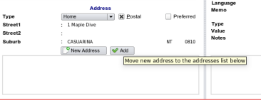

|  |
- As described in the section on adding phone numbers, just enter the street and suburb details or whatever minimum amount of
information is required. Note that in some sections you will be prompted at the time you save the record if anything is missing.
- Australian suburbs and postcodes are supplied with EasyGP and will appear automatically as you type. A valid town must be
selected and free text is not allowed.
|